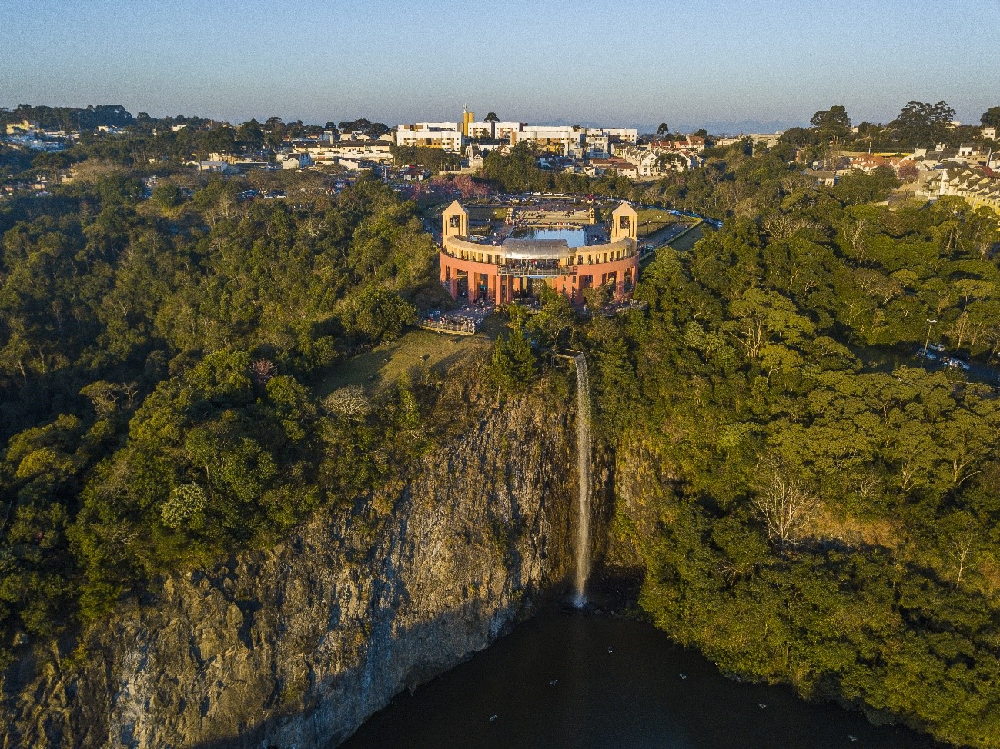
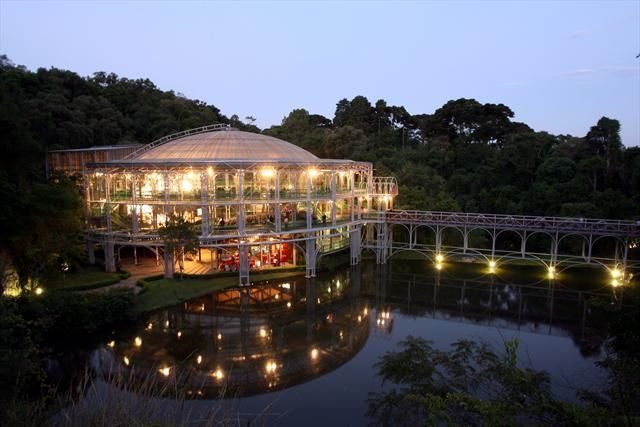

Natureza
Jardim Botânico
Caminhe pelos jardins geométricos e visite a estufa de vidro, um dos cenários mais conhecidos da cidade.
Ver atraçõesParaná · Brasil
Um guia para passear entre parques, arquitetura, cultura e sabores que fazem da capital paranaense um lugar especial.
Comece por aqui
De cartões-postais a refúgios verdes, descubra lugares para montar um passeio com a sua cara.
Natureza
Caminhe pelos jardins geométricos e visite a estufa de vidro, um dos cenários mais conhecidos da cidade.
Ver atrações
Ao ar livre
Mirantes, jardins e uma antiga pedreira transformada em um dos passeios mais bonitos de Curitiba.
Ver atrações
Arquitetura
Uma casa de espetáculos de estrutura leve e transparente, integrada à paisagem de mata e água.
Ver atraçõesSeu próximo passo
Encontre sabores locais, monte um roteiro e salve os lugares que quer visitar.